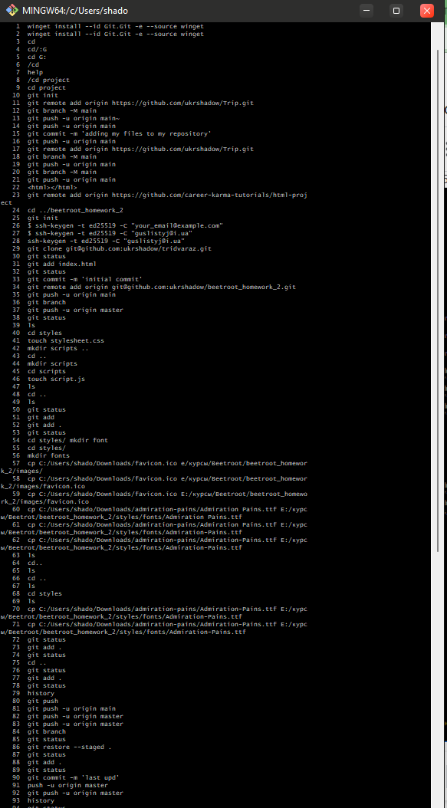
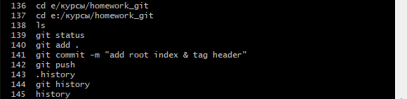

Скрін вийшов величенький бо тестував bash =) Десь з 25 пункту почав розбиратися що да як. 35 пункт - чомусь гілука мейна непройшла, тому запушив на мастер гілку. 57-59 - розбирався с "cp" фавікона, 60-71 - фонти (велика адреса, десь там в літері помилився)

Ну, тут вже роздуплився й потренувався, що до чого